HungarianOptions.ring_swapback_max_hops default moves from 8 to 16. #31's default of 8 was justified by "on US states the fixable count saturates at 8 hops" -- an 8-configuration sweep at hops 8/14/16 on one consistent config set shows that does not hold; 16 closes materially more holes than either 8 or 14 (ring 64->39, empty core 140->115, enclosed 11->5 summed across the 8 configs, and every remaining hole on districts/morph=True), at an accepted compactness cost on some configs. 14 was measured and rejected.
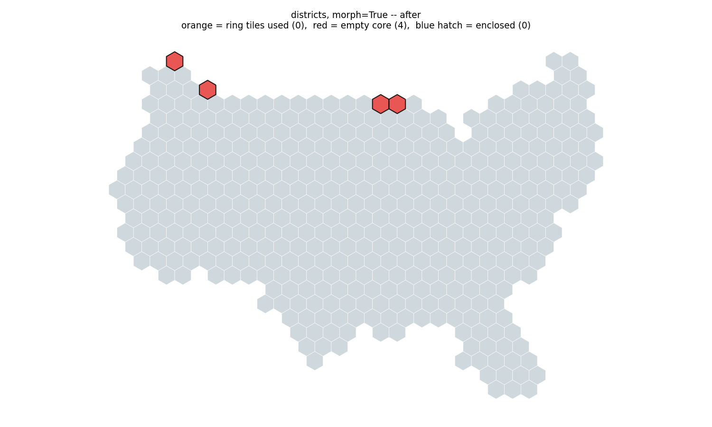
Same input, after (hops=16). Every hole closed: ring 6→0, empty core 10→4, enclosed 1→0.
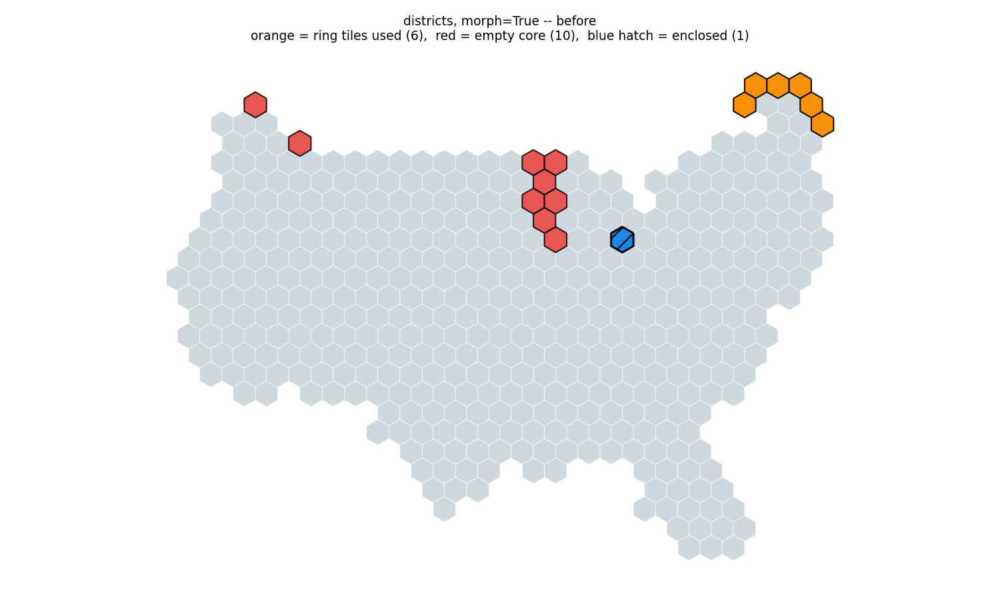
Congressional districts, morph=True, before (hops=8). orange = ring tiles used (6), red = empty core (10), blue hatch = enclosed (1).
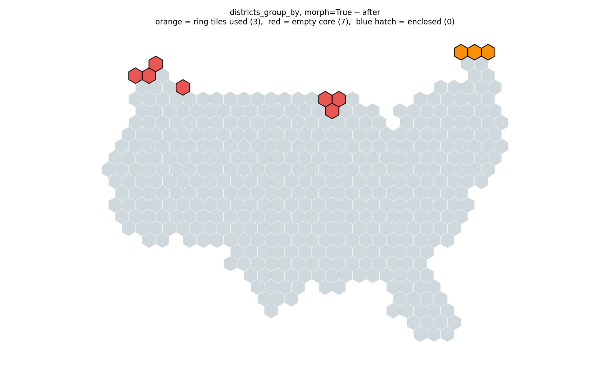
Same input, after (hops=16). ring 8→3, empty core 12→7.
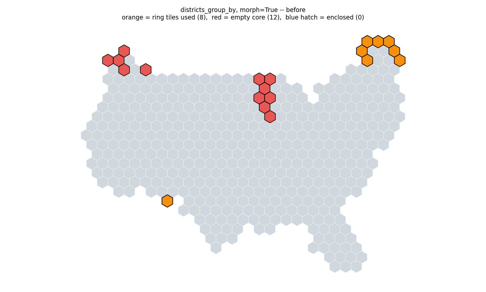
Districts grouped by state, morph=True, before (hops=8). ring 8, empty core 12, enclosed 0.
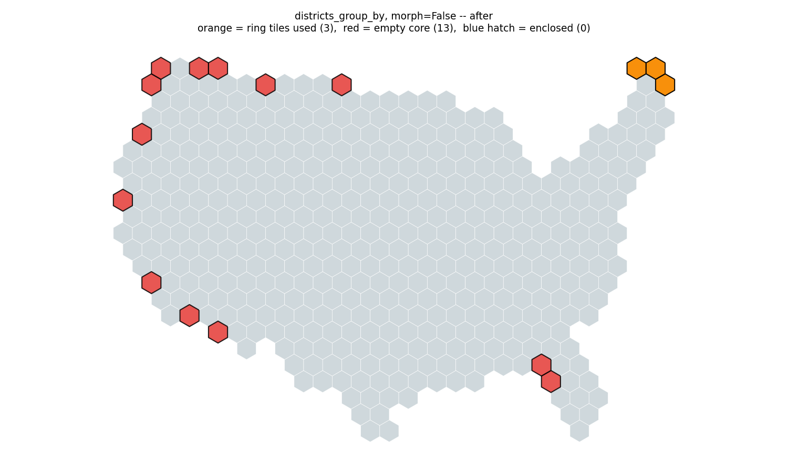
Same input, after (hops=16). split groups 1→0, converged False→True, entirely from the reach change. ring 6→3, empty core 16→13, enclosed 1→0.
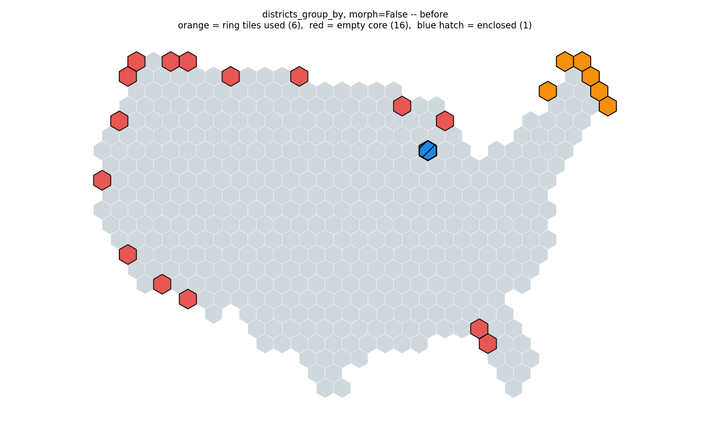
Districts grouped by state, morph=False, before (hops=8). The one configuration that does not converge at 8 hops: split groups 1, converged False.
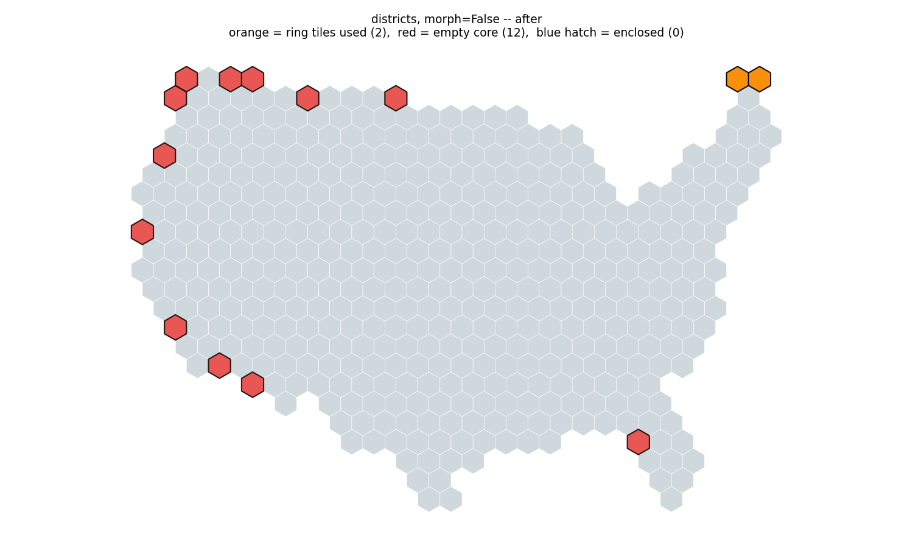
Same input, after (hops=16). ring 6→2, empty core 16→12, enclosed 1→0.
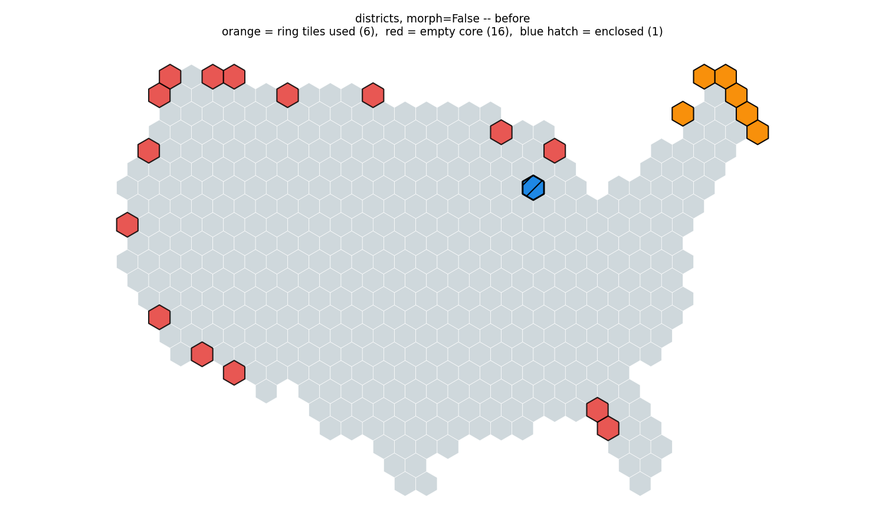
Congressional districts, morph=False, before (hops=8). ring 6, empty core 16, enclosed 1.
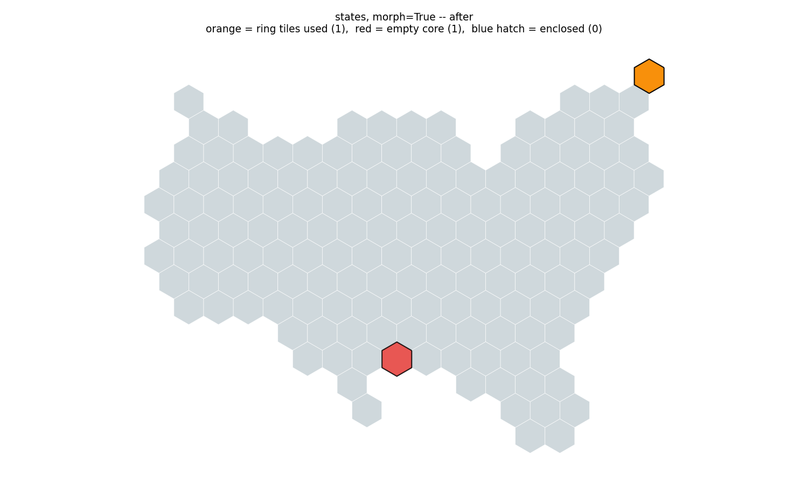
Same input, after (hops=16). ring 2→1, empty core 2→1.
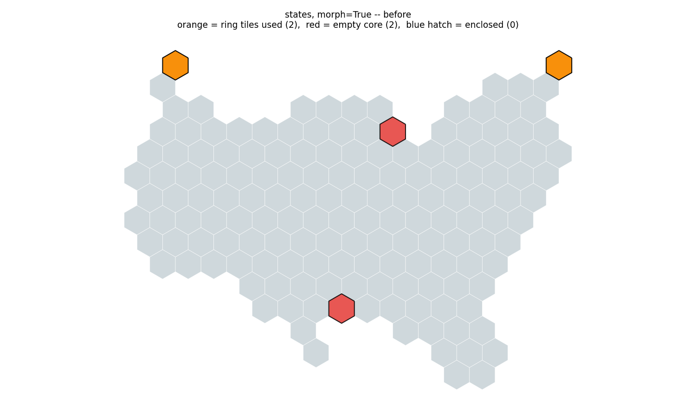
US states, morph=True, before (hops=8). ring 2, empty core 2.
Same input, after (hops=16). Bit-identical to before: ring 4, empty core 3.
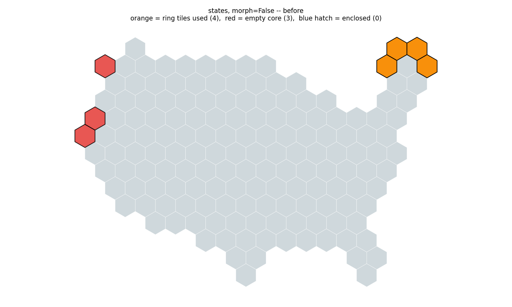
US states, morph=False, before (hops=8). ring 4, empty core 3 — already minimal; unchanged after.
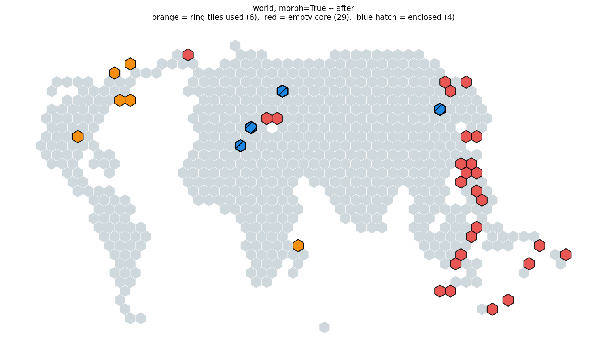
Same input, after (hops=16), one run. ring 9→6, empty core 32→29, enclosed 4→4 (unchanged), split regions 5→6 -- the one metric that regressed in this run (see PR body). Not deterministic across runs -- see STATUS.md.
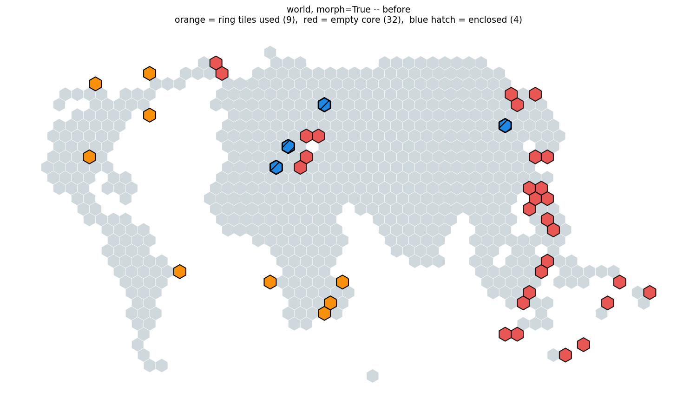
Whole world (176 countries, 600-tile budget), morph=True, before (hops=8), one run. ring 9, empty core 32, enclosed 4, split regions 5, not converged (176-country map does not fit its pool; pre-existing, unrelated to this change). This configuration is not deterministic across runs -- see STATUS.md; a re-run may show different ring/enclosed/pp values.
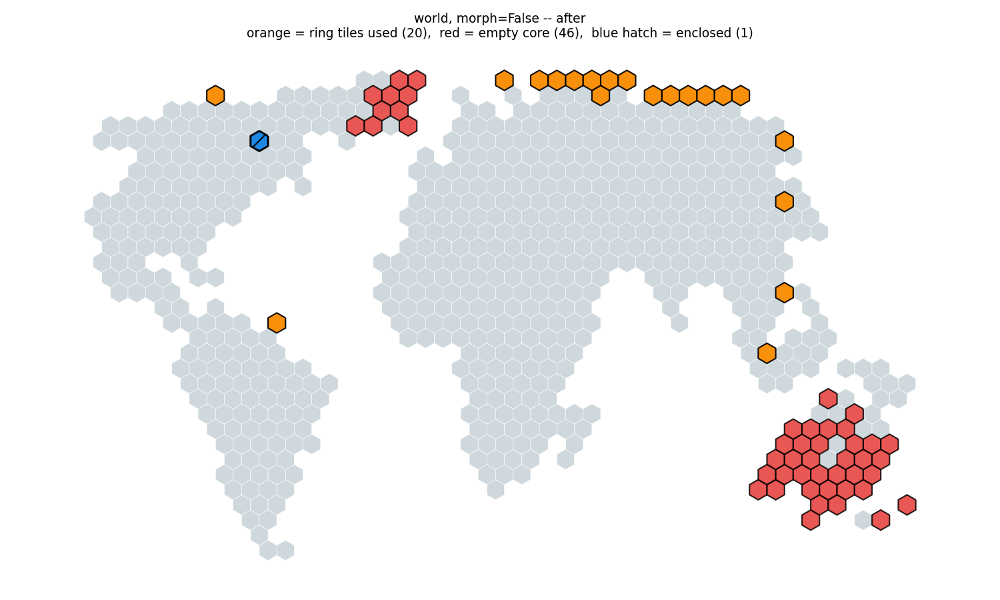
Same input, after (hops=16), one run. ring 23→20, empty core 49→46, enclosed 4→1, split regions 4→3 in this run.
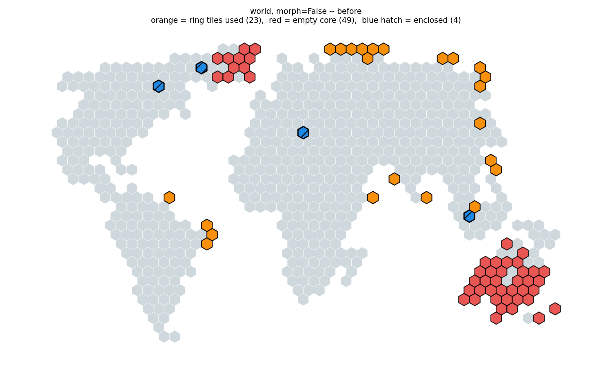
Whole world, morph=False, before (hops=8), one run. ring 23, empty core 49, enclosed 4, split regions 4.